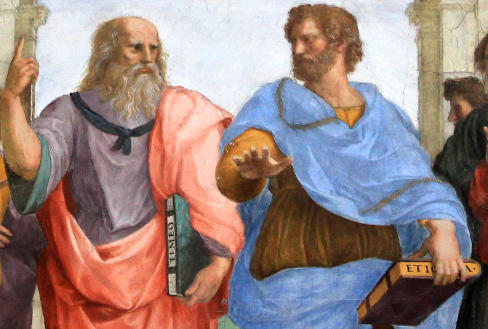
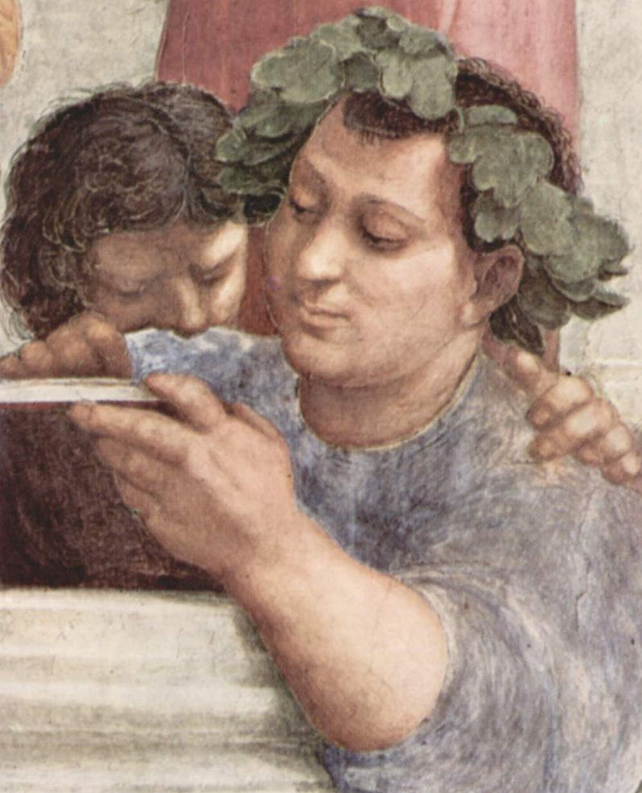
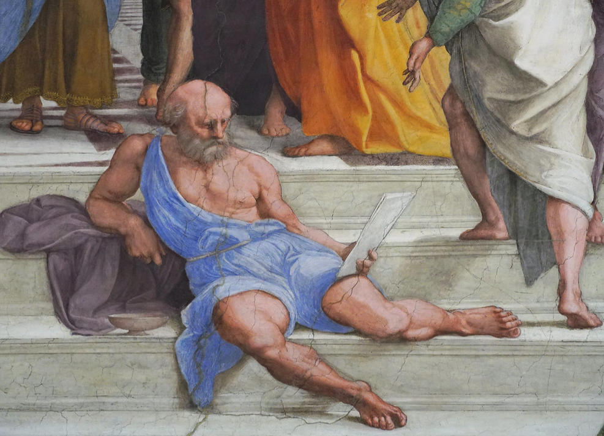

mindmap
root((**Aristóteles**))
**Vida**
Estagirita
Preceptor de Alexandre
Atenas aos 18 anos
Liceu
Escola peripatética
**Metafísica**
Critica Platão
Substância
Quatro causas
**Lógica**
Silogismo
Dedução
**Ética**
*Eudaimonia*
*Areté*
**Política**
Bem comum
*Politeía*
Crítica à demagogia
Aristotelismo e Helenismo
02/06/2026
O que é a boa vida?
| Conceito | Aristóteles | Estoicos | Epicuristas | Cínicos | Céticos |
|---|---|---|---|---|---|
| Virtude | 🟢 Central | 🟢 Central | 🟡 Importante (instrumental) | 🟢 Central | 🔴 Secundária |
| Tranquilidade | 🟡 Importante | 🟢 Central | 🟢 Central | 🟡 Importante | 🟢 Central |
| Liberdade interior | 🟡 Importante | 🟢 Central | 🟢 Central | 🟢 Central | 🟢 Central |
| Prazer | 🔴 Não é o fim | 🔴 Não é o fim | 🟢 Central | 🔴 Geralmente rejeitado como fim | 🔴 Secundário |
Aristóteles
Vida de Aristóteles
- Nasce em Estagira, na Macedônia, em 384 a.C.
- Aos 18 anos vai para Atenas estudar filosofia na Academia de Platão.
- Morre em Cálcis, em 322 a.C. (~62 anos)
- Filho de médico, o que pode explicar seu interesse pela pesquisa empírica e biologia.
- Preceptor de Alexandre Magno (356-323 a.C).
- Funda sua própria escola de filosofia, o Liceu.
- Escola peripatética: suas lições e debates aconteciam durante caminhadas.
Obra de Aristóteles
- O corpus aristotelicum que chegou até nós foi constituído por volta de 50 a.C, por Andrônico de Rodes.
- As obras exotéricas, isto é, destinadas ao público externo à escola, perderam-se.
- As obras do corpus aristotelicum são textos de estudo interno e por isso mais áridos que os diálogos platônicos, por exemplo.
Continuidade e crítica do platonismo
- A filosofia de Aristóteles dialoga com a metafísica platônica e dá continuidade crítica a ela.
- No entanto, enquanto a metafísica platônica concentra-se nas ideias (ou formas), a de Aristóteles foca na substância (ousia), que une forma inteligível e matéria sensível.
- Assim, Aristóteles critica o dualismo da teoria platônica ao remover a separação entre a forma e matéria (imanência).
- A teoria de Aristóteles atribui mais importância à experiência sensível, empírica, enquanto a de Platão privilegia o conhecimento das formas pelo intelecto.
- Tanto Platão quanto Aristóteles procuram conciliar a mudança do mundo sensível (Heráclito) com a permanência necessária ao conhecimento (Parmênides).

Rafael Sanzio, A Escola de Atenas, c.1509–11, Stanza della Segnatura, Palácio Apostólico, Vaticano
A metafísica aristotélica e as quatro causas
- Novo ponto de partida para uma teoria sobre a realidade: a substância individual, que corresponde a um indivíduo material concreto (synolon).
- A forma compartilhada por indivíduos de uma mesma espécie pode ser conhecida pela observação empírica.
- É importante notar que a forma não é criada pelo observador; simplesmente passa a ser conhecida por ele.
- Nova epistemologia: conhecer algo é conhecer suas causas.
- Causa formal: essência.
- Causa material: matéria.
- Causa eficiente: explicação do aparecimento.
- Causa final: explicação do objetivo.
Potência e ato
Conceitos que explicam como a realidade está em constante transformação.
- Potência (dýnamis)
- Possibilidade de ser ou tornar-se algo.
- Ainda não realizado.
- O que pode vir a existir.
- Exemplo: Uma semente é uma árvore em potência.
- Ato (enérgeia / entelécheia)
- Realização plena da potência.
- O ser já concretizado.
- A forma atual da coisa.
- Exemplo: A árvore adulta é o ato da semente.
- Todo ser em potência tende ao ato, que é mais perfeito que a potência.
- O movimento é a passagem da potência para o ato.
- As quatro causas (material, formal, eficiente e final) explicam o movimento da potência ao ato.
Felicidade
- “Toda arte e todo método, assim como toda ação e escolha, parecem tender para um certo bem; por isso se tem dito, com acerto, que o bem é aquilo para que todas as coisas tendem.” - Ética a Nicômaco (350 a.C.)
- Ética teleológica: tudo que existe tem uma finalidade. A do ser humano é a felicidade
- Eudaimonia: felicidade, a finalidade da existência humana.
- Areté: virtude (bom hábito adquirido), o caminho para o ser humano alcançar a felicidade.
- A virtude está na justa medida: covardia x audácia → coragem, arrogância x humilhação → dignidade, etc.
- Três tipos de vida: dos prazeres, política, contemplativa. A justa medida se aplica aqui também.
Política
- “Sem amigos, ninguém escolheria viver.” - Ética a Nicômaco (350 a.C.)
- O governo dos cidadãos deve refletir o bem comum.
- O cidadão deve participar efetivamente das questões de sua comunidade e precisa ser educado para isso.
- O governo pode ser de um, poucos ou muitos.
- Formas virtuosas de governo: monarquia, aristocracia, politeía.
- Formas corrompidas de governo: tirania, oligarquia, democracia.
- A democracia é apresentada como corrompida porque Aristóteles a associa a demagogia, a busca de interesses escusos em nome da maioria.
- A justiça em Aristotéles é distributiva (superar as desigualdades de riquezas e honras) e comutativa (remediar injustiças que venham a ocorrer).
- Aristóteles justifica a escravidão, como um dado da natureza do escravizado, o que se contradiz à suas ideias sobre a amizade.
Lógica
- A lógica não é uma ciência, mas um instrumento (organon).
- Silogismo categórico: Todo homem é mortal. Ora, Sócrates é homem. Logo, Sócrates é mortal.
- A forma do silogismo acima (AAA) garante que o argumento é válido, independentemente do sujeito (Sócrates), predicado (mortal) e do termo médio (homem): Todo M é P. Ora, S é M. Logo, S é P.
- Outro exemplo de silogismo (EAE): Nenhum M é P. Ora, todo S é M. Logo, nenhum S é P.
- Um argumento pode ser válido ainda que não seja verdadeiro.
- A lógica aristotélica é dedutiva.
- Aristóteles formulou os três princípios da lógica matemática, ainda em uso atualmente.
- Identidade: A=A e não pode ser de outro modo.
- Não contradição: Uma proposição não pode ser verdadeira e falsa ao mesmo tempo e sob as mesmas condições.
- Terceiro excluído: Uma proposição ou é verdadeira ou é falsa, não havendo outro julgamento possível.
Mapa mental
Filosofias Helenísticas
- Surgiram após as conquistas de Alexandre Magno, quando a crise da pólis levou os filósofos a buscar respostas para a vida individual.
- Helenismo = fusão greco-oriental.
- Foco na felicidade.
- Busca da tranquilidade interior.
- Preocupação ética e prática.
- Menos interesse pela política da cidade.
- Cosmopolitismo: ideia de “cidadão do mundo”, universalismo moral.
Estoicismo
- Fundador: Zenão de Cítio (333-263 a.C)
- Virtude como o bem supremo.
- Autocontrole das paixões e emoções.
- Viver de acordo com a razão e a natureza.
- Aceitação serena dos acontecimentos.
- O Enem costuma associar o estoicismo à disciplina pessoal, racionalidade e resistência diante das adversidades.
Epicurismo
- Fundador: Epicuro de Samos (341-271 a.C.)
- Busca da felicidade por meio do prazer moderado.
- Evitar dores físicas e perturbações da alma.
- Valorizar amizades, simplicidade e equilíbrio.
- Ataraxia: estado de tranquilidade interior.
- ⚠️ Epicurismo não significa busca excessiva de prazeres: Epicuro defendia prazeres simples e a moderação.

Epicuro
Cinismo
- Principal representante: Diógenes de Sinope (404-323 a.C.)
- Vida simples e autossuficiente.
- Crítica às riquezas e ao luxo.
- Rejeição das convenções sociais.
- Liberdade em relação às necessidades artificiais.
- A felicidade não depende de bens materiais.

Diógenes
Ceticismo
- Fundador: Pirro de Élis (360-270 a.C.)
- Dificuldade de alcançar verdades absolutas.
- Suspensão do juízo (epoché).
- Evitar afirmações categóricas.
- Tranquilidade obtida pela dúvida crítica.
- O Enem costuma relacionar o ceticismo à postura crítica diante do conhecimento.
Mapa mental
mindmap
root((**Helenismo**<br>Séc. IV-I a.C.))
**Estoicos**
Virtude
Autocontrole
Razão
Resignação
**Epicuristas**
Tranquilidade
Evitação da\ndor
Prazer\nmoderado
**Cínicos**
Simplicidade
Desprezo por\nconvenções
Autossuficiência
**Céticos**
Suspensão do\njuízo
Crítica do\nconhecimento
Questões do Enem
Questão 1
TEXTO I
Aristóteles entendia que a felicidade era diretamente ligada ao respeito pela própria natureza e, de certa maneira, a uma vida que tivesse na natureza de si mesma uma referência inabalável. Isso lhe permitiu formular o conceito de excelência. O que seria excelência? Seria, justamente, ao longo da vida, tirar de si mesmo, em forma de performance, de conduta, de comportamento, de disposição, o que a natureza permitiria de melhor.
COEN, M.; BARROS FILHO, C. A monja e o professor: reflexões sobre ética, preceitos e valores. Rio de Janeiro: Best Seller, 2018.
TEXTO II
A noção de eudaimonia é central para a ética aristotélica. A eudaimonia é uma atividade e não um estado psicológico, pois é definida na Ética a Nicômaco como uma atividade da alma com base na virtude moral. A virtude moral é definida em termos de uma disposição diretamente ligada à deliberação, o que o leva a estudar a virtude intelectual que opera em seu interior, isto é, a prudência. A estrutura conceitual da ética aristotélica responde a uma tentativa de elucidar conceitualmente em que consiste isto, agir bem, ou, na linguagem aristotélica, o que significa ser feliz.
ZINGANO, M. Eudaimonia, razão e contemplação na ética aristotélica. Analytica, n. 1, 2017 (adaptado).
Os textos indicam que a prática de ações virtuosas, sempre efetivada na pólis, ocorre por meio do(a)
A teoria das formas essenciais.
B identificação dos princípios racionais.
C desenvolvimento das técnicas retóricas.
D aperfeiçoamento das condutas humanas.
E conhecimento das epistemes verdadeiras.
Questão 2
O corpo de cidadãos é o poder supremo dos Estados. A supremacia pode residir ou num homem, ou na minoria, ou em todos. Sempre que o Um, ou a Minoria, ou Todos governam, tendo em vista o bem-estar comum, essas constituições são justas; mas se procuram apenas o benefício de uma das partes, seja ela o Um, a Minoria ou Todos, estabelece-se um desvio.
ARISTÓTELES. Política. São Paulo: Nova Cultural, 2000.
No excerto encontra-se a base da teoria clássica das três formas de governo representadas pela
A tirania, oligarquia e república.
B burocracia, autarquia e império.
C ditadura, autocracia e anarquia.
D plutocracia, tecnocracia e demagogia.
E monarquia, aristocracia e democracia.
Questão 3
O que eu queria ter sido
Um nome para o que sou, importa muito pouco. Importa o que eu gostaria de ser. O que eu gostaria de ser era uma lutadora. Quero dizer, uma pessoa que luta pelo bem dos outros. Isso desde pequena eu quis. Por que foi o destino me levando a escrever o que já escrevi, em vez de também desenvolver em mim a qualidade de lutadora que eu tinha? Em pequena, minha família por brincadeira chamava-me de “a protetora dos animais”. Porque bastava acusarem uma pessoa para eu imediatamente defendê-la. E eu sentia o drama social com tanta intensidade que vivia de coração perplexo diante das grandes injustiças a que são submetidas as chamadas classes menos privilegiadas.
LISPECTOR, C. Aprendendo a viver. Rio de Janeiro: Rocco Digital, 2013.
A reflexão contida no texto faz referência aos pressupostos de uma doutrina ética representada pelo
A estado eudaimônico.
B referencial hedonista.
C pensamento altruísta.
D movimento antiespecista.
E comportamento pragmático.
Questão 4
Pensa-se que é característico de uma pessoa de discernimento ser capaz de deliberar bem acerca do que é bom e conveniente para si mesma, não em relação a um aspecto particular — por exemplo, quando se quer saber quais as espécies de coisas que concorrem para a saúde e para o vigor físico —, e sim acerca das espécies de coisas que nos levam a viver bem de um modo geral. O discernimento deve ser então uma qualidade que leva à verdade no tocante às ações relacionadas com os bens humanos.
ARISTÓTELES. Ética a Nicômaco. In: MARCONDES, D. (Org.). Textos básicos de Ética. Rio de Janeiro: Zahar, 2008 (adaptado).
Conforme o trecho filosófico, a pessoa capaz de bem decidir é dotada de uma qualidade
A teórica, voltada para o rigor da pesquisa.
B racional, voltada para a orientação das escolhas.
C pragmática, voltada para o desenvolvimento de projetos.
D filosófica, voltada para a delimitação de opiniões.
E social, voltada para a criação da arte.
Questão 5
Alguns dos desejos são naturais e necessários; outros, naturais e não necessários; outros, nem naturais nem necessários, mas nascidos de vã opinião. Os desejos que não nos trazem dor se não satisfeitos não são necessários, mas o seu impulso pode ser facilmente desfeito, quando é difícil obter sua satisfação ou parecem geradores de dano.
EPICURO DE SAMOS. Doutrinas principais. In: SANSON, V. F. Textos de filosofia. Rio de Janeiro: Eduff, 1974.
No fragmento da obra filosófica de Epicuro, o homem tem como fim
A alcançar o prazer moderado e a felicidade.
B valorizar os deveres e as obrigações sociais.
C aceitar o sofrimento e o rigorismo da vida com resignação.
D refletir sobre os valores e as normas dadas pela divindade.
E defender a indiferença e a impossibilidade de se atingir o saber.
Questão 6
Vemos que toda cidade é uma espécie de comunidade, e toda comunidade se forma com vistas a algum bem, pois todas as ações de todos os homens são praticadas com vistas ao que lhe parece um bem; se todas as comunidades visam algum bem, é evidente que a mais importante de todas elas e que inclui todas as outras tem mais que todas este objetivo e visa ao mais importante de todos os bens.
ARISTÓTELES. Política. Brasília: UnB, 1988.
No fragmento, Aristóteles promove uma reflexão que associa dois elementos essenciais à discussão sobre a vida em comunidade, a saber:
A Ética e política, pois conduzem à eudaimonia.
B Retórica e linguagem, pois cuidam dos discursos na ágora.
C Metafísica e ontologia, pois tratam da filosofia primeira.
D Democracia e sociedade, pois se referem a relações sociais.
E Geração e corrupção, pois abarcam o campo da physis.
Questão 7
XI. Jamais, a respeito de coisa alguma, digas: "Eu a perdi", mas sim: "Eu a restituí". O filho morreu? Foi restituído. A mulher morreu? Foi restituída. "A propriedade me foi subtraída", então também foi restituída. "Mas quem a subtraiu é mau". O que te importa por meio de quem aquele que te dá a pede de volta? Na medida em que ele der, faz uso do mesmo modo de quem cuida das coisas de outrem. Do mesmo modo como fazem os que se instalam em uma hospedaria.
EPICTETO. Encheirídion. In: DINUCCI, A. Introdução ao Manual de Epicteto. São Cristóvão: UFS, 2012 (adaptado).
A característica do estoicismo presente nessa citação do filósofo grego Epicteto é
A explicar o mundo com números.
B identificar a felicidade com o prazer.
C aceitar os sofrimentos com serenidade.
D questionar o saber científico com veemência.
E considerar as convenções sociais com desprezo.
Questão 8
Dado que, dos hábitos racionais com os quais captamos a verdade, alguns são sempre verdadeiros, enquanto outros admitem o falso, como a opinião e o cálculo, enquanto o conhecimento científico e a intuição são empre verdadeiros, e dado que nenhum outro gênero de conhecimento é mais exato que o conhecimento científico, exceto a intuição, e, por outro lado, os princípios são mais conhecidos que as demonstrações, e dado que todo conhecimento científico constitui-se de maneira argumentativa, não pode haver conhecimento científico dos princípios, e dado que não pode haver nada mais verdadeiro que o conhecimento científico, exceto a intuição, a intuição deve ter por objeto os princípios.
ARISTÓTELES. Segundos analíticos. In: REALE, G. História da filosofia antiga. São Paulo: Loyola, 1994.
Os princípios, base da epistemologia aristotélica, pertencem ao domínio do(a):
A opinião, pois fazem parte da formação da pessoa.
B cálculo, pois são demonstrados por argumentos.
C conhecimento científico, pois admitem provas empíricas.
D intuição, pois ela é mais exata que o conhecimento científico.
E prática de hábitos racionais, pois com ela se capta a verdade.
Questão 9
Entretanto, nosso amigo Basso tem o ânimo alegre. Isso resulta da filosofia: estar alegre diante da morte, forte e contente qualquer que seja o estado do corpo, sem desfalecer, ainda que desfaleça.
SÊNECA, L. Cartas morais. Lisboa: Calouste Gulbenkian, 1990.
O excerto refere-se a uma carta de Sêneca na qual se apresenta como um bem fundamental da filosofia promover a
A valorização de disputas dialógicas.
B rejeição das convenções sociais.
C inspiração de natureza religiosa.
D exaltação do sofrimento.
E moderação das paixões.
Questão 10
Advento da Polis, nascimento da filosofia: entre as duas ordens de fenômenos, os vínculos são demasiado estreitos para que o pensamento racional não apareça, em suas origens, solidário das estruturas sociais e mentais próprias da cidade grega. Assim recolocada na história, a filosofia despoja-se desse caráter de revelação absoluta que às vezes lhe foi atribuído, saudando, na jovem ciência dos jônios, a razão intemporal que veio encarnar-se no Tempo. A escola de Mileto não viu nascer a Razão; ela construiu uma Razão, uma primeira forma de racionalidade. Essa razão grega não é a razão experimental da ciência contemporânea.
VERNANT, J. P. Origens do pensamento grego. Rio de Janeiro: Difel, 2002.
Os vínculos entre os fenômenos indicados no trecho foram fortalecidos pelo surgimento de uma categoria de pensadores, a saber:
A Os epicuristas, envolvidos com o ideal de vida feliz.
B Os estoicos, dedicados à superação dos infortúnios.
C Os sofistas, comprometidos com o ensino da retórica.
D Os peripatéticos, empenhados na dinâmica do ensino.
E Os poetas rapsodos, responsáveis pela narrativa do mito.
Questão 11
A felicidade é, portanto, a melhor, a mais nobre e a mais aprazível coisa do mundo, e esses atributos não devem estar separados como na inscrição existente em Delfos “das coisas, a mais nobre é a mais justa, e a melhor é a saúde; porém a mais doce é ter o que amamos”. Todos estes atributos estão presentes nas mais excelentes atividades, e entre essas a melhor, nós a identificamos como felicidade.
ARISTÓTELES. A Política. São Paulo: Cia. das Letras, 2010.
Ao reconhecer na felicidade a reunião dos mais excelentes atributos, Aristóteles a identifica como
A busca por bens materiais e títulos de nobreza.
B plenitude espiritual e ascese pessoal.
C finalidade das ações e condutas humanas.
D conhecimento de verdades imutáveis e perfeitas.
E expressão do sucesso individual e reconhecimento público.
Questão 12
A utilidade do escravo é semelhante à do animal. Ambos prestam serviços corporais para atender às necessidades da vida. A natureza faz o corpo do escravo e do homem livre de forma diferente. O escravo tem corpo forte, adaptado naturalmente ao trabalho servil. Já o homem livre tem corpo ereto, inadequado ao trabalho braçal, porém apto à vida do cidadão.
ARISTÓTELES. Política. Brasília: UnB, 1985.
O trabalho braçal é considerado, na filosofia aristotélica, como
A indicador da imagem do homem no estado de natureza.
B condição necessária para a realização da virtude humana.
C atividade que exige força física e uso limitado da racionalidade.
D referencial que o homem deve seguir para viver uma vida ativa.
E mecanismo de aperfeiçoamento do trabalho por meio da experiência.
Questão 13
Se, pois, para as coisas que fazemos existe um fim que desejamos por ele mesmo e tudo o mais é desejado no interesse desse fim; evidentemente tal fim será o bem, ou antes, o sumo bem. Mas não terá o conhecimento, porventura, grande influência sobre essa vida? Se assim é, esforcemo-nos por determinar, ainda que em linhas gerais apenas, o que seja ele e de qual das ciências ou faculdades constitui o objeto. Ninguém duvidará de que o seu estudo pertença à arte mais prestigiosa e que mais verdadeiramente se pode chamar a arte mestra. Ora, a política mostra ser dessa natureza, pois é ela que determina quais as ciências que devem ser estudadas num Estado, quais são as que cada cidadão deve aprender, e até que ponto; e vemos que até as faculdades tidas em maior apreço, como a estratégia, a economia e a retórica, estão sujeitas a ela. Ora, como a política utiliza as demais ciências e, por outro lado, legisla sobre o que devemos e o que não devemos fazer, a finalidade dessa ciência deve abranger as das outras, de modo que essa finalidade será o bem humano.
ARISTÓTELES. Ética a Nicômaco. In: Pensadores. São Paulo: Nova Cultural, 1991 (adaptado).
Para Aristóteles, a relação entre o sumo bem e a organização da pólis pressupõe que
A o bem dos indivíduos consiste em cada um perseguir seus interesses.
B o sumo bem é dado pela fé de que os deuses são os portadores da verdade.
C a política é a ciência que precede todas as demais na organização da cidade.
D a educação visa formar a consciência de cada pessoa para agir corretamente.
E a democracia protege as atividades políticas necessárias para o bem comum.
Questão 14
Vimos que o homem sem lei é injusto e o respeitador da lei é justo; evidentemente todos os atos legítimos são, em certo sentido, atos justos, porque os atos prescritos pela arte do legislador são legítimos e cada um deles é justo. Ora, nas disposições que tomam sobre todos os assuntos, as leis têm em mira a vantagem comum, quer de todos, quer dos melhores ou daqueles que detêm o poder ou algo desse gênero; de modo que, em certo sentido, chamamos justos aqueles atos que tendem a produzir e a preservar, para a sociedade política, a felicidade e os elementos que a compõem.
ARISTÓTELES. A política. São Paulo: Cia. das Letras, 2010 (adaptado).
De acordo com o texto de Aristóteles, o legislador deve agir conforme a
A moral e a vida privada.
B virtude e os interesses públicos.
C utilidade e os critérios pragmáticos.
D lógica e os princípios metafísicos.
E razão e as verdades transcendentes.
Questão 15
Pensa-se que é característico de uma pessoa de discernimento ser capaz de deliberar bem acerca do que é bom e conveniente para si mesma, não em relação a um aspecto particular — por exemplo, quando se quer saber quais as espécies de coisas que concorrem para a saúde e para o vigor físico —, e sim acerca das espécies de coisas que nos levam a viver bem de um modo geral. O discernimento deve ser então uma qualidade que leva à verdade no tocante às ações relacionadas com os bens humanos.
ARISTÓTELES. Ética a Nicômaco. In: MARCONDES, D. (Org.). Textos básicos de Ética. Rio de Janeiro: Zahar, 2008 (adaptado).
Conforme o trecho filosófico, a pessoa capaz de bem decidir é dotada de uma qualidade
A teórica, voltada para o rigor da pesquisa.
B racional, voltada para a orientação das escolhas.
C pragmática, voltada para o desenvolvimento de projetos.
D filosófica, voltada para a delimitação de opiniões.
E social, voltada para a criação da arte.
Questão 16
O Estado surge pelo fato de ser o homem um animal naturalmente social, político. O Estado provê, inicialmente, a satisfação daquelas necessidades materiais, negativas e positivas, defesa e segurança, conservação e engrandecimento, de outro modo irrealizáveis. Mas o seu fim essencial é espiritual, isto é, deve promover a virtude e, consequentemente, a felicidade dos súditos mediante a ciência.
ARISTÓTELES. A política. São Paulo: Martins Fontes, 2006 (adaptado).
Segundo o autor, é função do Estado garantir o(a)
A justiça divina, pregando a salvação eterna dos fiéis.
B soberania, respeitando a autonomia dos três poderes.
C propriedade privada, protegendo o direito natural inalienável.
D vida ética, proporcionando a formação moral dos cidadãos.
E direito de resistência, suprimindo governos considerados impopulares.
Questão 17
As propostas dele não devem ser levadas a sério, pois foi visto bêbado num restaurante.
GALINDO, R. 20 falácias (e as eleições). Disponível em: www.gazetadopovo.com.br. Acesso em: 17 out. 2021 (adaptado).
A afirmação, eficaz como mecanismo de persuasão de eleitores em contextos políticos, constitui-se como uma falácia porque
A recorre à circularidade e afirma as suas teses.
B ataca a pessoa e desconsidera as suas ideias.
C aceita a conclusão e refuta as suas premissas.
D evoca a maioria e apresenta os seus argumentos.
E apela à autoridade e investiga os seus fundamentos.
Questão 18
Sem dúvida, os sons da voz (phone) exprimem a dor e o prazer; também a encontramos nos animais em geral; sua natureza lhes permite somente sentir a dor e o prazer e manifestar-lhes entre si. Mas o lógos é feito para exprimir o justo e o injusto. Este é o caráter distintivo do homem face a todos os outros animais: só ele percebe o bem e o mal, o justo e o injusto, e os outros valores; é a posse comum desses valores que faz a família e a cidade.
ARISTÓTELES. A política. São Paulo: Nova Cultural, 1987 (adaptado).
Para o autor, a característica que define o ser humano é o lógos, que consiste na
A evolução espiritual da alma.
B apreensão gradual da verdade.
C segurança material do indivíduo.
D capacidade racional de discernir.
E possibilidade eventual de transcender.